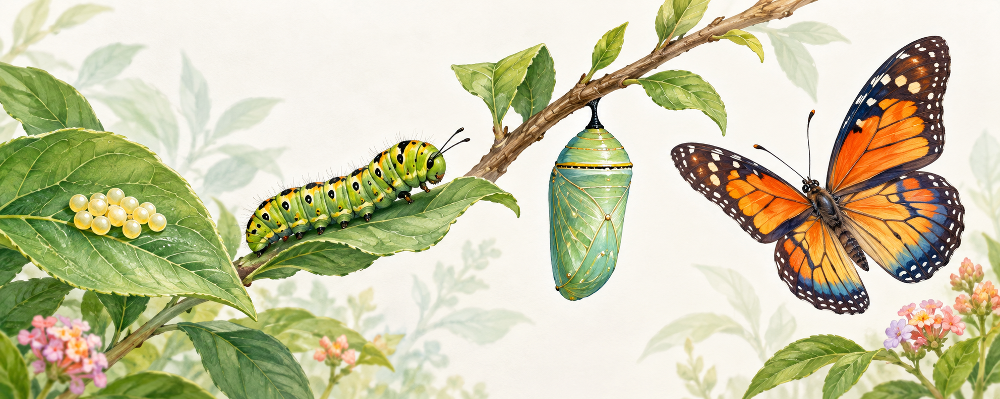
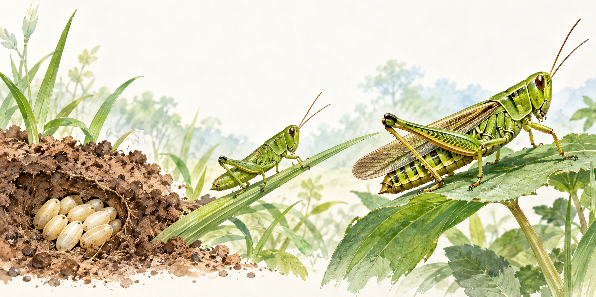

Metamorfosis sempurna
4 tahapTelur → larva (ulat) → pupa (kepompong) → imago/dewasa. Bentuk muda sangat berbeda dari bentuk dewasanya.
IPAS • KEHIDUPAN HEWAN
Pahami perubahan bentuk hewan melalui contoh nyata, lalu uji pemahamanmu dalam 10 soal pilihan ganda.
SIAP BELAJAR?
Hasil latihan dapat langsung diulang atau dicetak.
Tuliskan namamu terlebih dahulu.
GALERI BELAJAR
Amati urutan perubahan bentuk setiap hewan sebelum mengerjakan soal.

Telur → larva (ulat) → pupa (kepompong) → imago/dewasa. Bentuk muda sangat berbeda dari bentuk dewasanya.

Telur → nimfa → dewasa. Nimfa mirip dengan hewan dewasa, tetapi tubuh dan sayapnya belum berkembang penuh.
Kupu-kupu, nyamuk, dan kumbang mengalami metamorfosis sempurna. Belalang dan kecoa mengalami metamorfosis tidak sempurna. Tahap pupa hanya ada pada metamorfosis sempurna.
SOAL
LATIHAN SELESAI
SKOR
/
NILAI